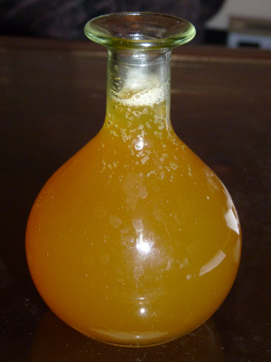

Honey Refresher for Travelers

Description
This recipe is very old. It was served during the ancient times to reinvigorate travellers.
One of the ingredients is spiced wine
Ingredients
- HONEY
- GROUND PEPPER
- SPICED WINE
Steps
- FLAVOR HONEY WITH GROUND PEPPER AND SKIM
- IN THE MOMENT OF SERVING PUT HONEY IN A CUP, AS MUCH AS IS DESIRED TO OBTAIN THE RIGHT DEGREE OF SWEETNESS, AND MIX SPICED WINE (NOT MORE THAN A NEEDED QUANTITY)
- ALSO ADD SOME WINE TO THE SPICED HONEY TO FACILITATE ITS FLOW AND THE MIXING
Back to main page